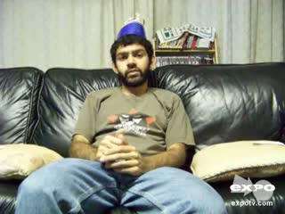

下列时间来自 CTC；结构检查与实际听审分别记录。本页不自动批准任何词时。参考帧按真实解码 PTS 选取，只展示视频上下文；不证明它们对应模型官方视觉特征行。
原文：If you're a fan of dancing in that sense, just like to watch people dance, see impressive dance moves then you might want to check out this movie solely for that
音频起点 0.000000s；视频时长 9.800s；边界/顺序异常 0。复核后填写 data/review/word_times.csv 的审核列，再运行 map 和 report。

| word_id | 原词 | 候选区间 | 状态 | 播放 |
|---|---|---|---|---|
| 3 | fan | 0.787–0.851s | 算法拒绝 · 优先核验 / algorithm_rejected | |
| 26 | this | 6.311–6.408s | 算法拒绝 · 优先核验 / algorithm_rejected | |
| 0 | If | 0.225–0.498s | 主文本证据 · 待听审 / algorithm_accepted | |
| 1 | you're | 0.498–0.723s | 主文本证据 · 待听审 / algorithm_accepted | |
| 2 | a | 0.723–0.787s | 主文本证据 · 待听审 / algorithm_accepted | |
| 16 | impressive | 3.710–4.288s | 主文本证据 · 待听审 / algorithm_accepted | |
| 17 | dance | 4.288–4.448s | 主文本证据 · 待听审 / algorithm_accepted | |
| 18 | moves | 4.448–5.027s | 主文本证据 · 待听审 / algorithm_accepted | |
| 4 | of | 0.851–0.980s | 待听审 / algorithm_accepted | |
| 5 | dancing | 0.980–1.108s | 待听审 / algorithm_accepted | |
| 6 | in | 1.108–1.494s | 待听审 / algorithm_accepted | |
| 7 | that | 1.494–1.654s | 待听审 / algorithm_accepted | |
| 8 | sense, | 1.654–1.847s | 待听审 / algorithm_accepted | |
| 9 | just | 1.847–2.200s | 待听审 / algorithm_accepted | |
| 10 | like | 2.200–2.361s | 待听审 / algorithm_accepted | |
| 11 | to | 2.361–2.521s | 待听审 / algorithm_accepted | |
| 12 | watch | 2.521–2.650s | 待听审 / algorithm_accepted | |
| 13 | people | 2.650–2.939s | 待听审 / algorithm_accepted | |
| 14 | dance, | 2.939–3.228s | 待听审 / algorithm_accepted | |
| 15 | see | 3.228–3.710s | 待听审 / algorithm_accepted | |
| 19 | then | 5.056–5.573s | 待听审 / algorithm_accepted | |
| 20 | you | 5.573–5.701s | 待听审 / algorithm_accepted | |
| 21 | might | 5.701–5.829s | 待听审 / algorithm_accepted | |
| 22 | want | 5.829–5.990s | 待听审 / algorithm_accepted | |
| 23 | to | 5.990–6.086s | 待听审 / algorithm_accepted | |
| 24 | check | 6.086–6.183s | 待听审 / algorithm_accepted | |
| 25 | out | 6.183–6.311s | 待听审 / algorithm_accepted | |
| 27 | movie | 6.408–6.697s | 待听审 / algorithm_accepted | |
| 28 | solely | 6.697–7.050s | 待听审 / algorithm_accepted | |
| 29 | for | 7.050–7.243s | 待听审 / algorithm_accepted | |
| 30 | that | 7.243–7.403s | 待听审 / algorithm_accepted |